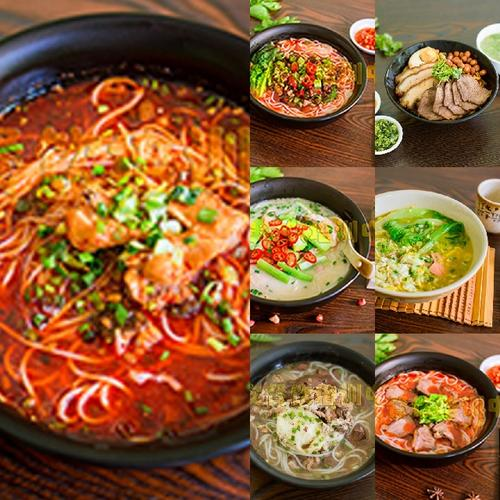
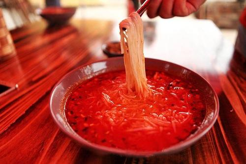

 
<
>
美食介绍
这是我最喜欢的美食，栖凤渡鱼粉
栖凤渡鱼粉是湖南郴州的著名小吃，属于湘菜系。发源地在湖南省郴州市苏仙区栖凤渡这个古镇。“走千里路、万里路，舍不得栖凤渡！”这句流传千百年的古话说的不仅是栖凤渡的地方好，更是夸她的独树一帜的传统小吃栖凤渡鱼粉。一说起栖凤渡鱼粉，只要是郴州人，应该都会下意识咂一下嘴巴，咽咽口水，于是，一股浓烈的鱼香和着辛辣味便回味在你嘴里了。真香。
想要进一步了解，请点击此文字。（欢迎实地考察一下。）
自我介绍
我是通信1903班的郭东，我的学号是201916180323。来自湖南郴州，平时喜欢打打游戏，踢踢球。
我前一位同学是201916180322 罗鑫同学
我后一位同学是201916180324 桂亮同学